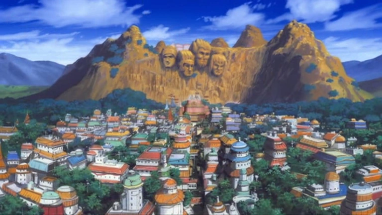

Aldea De La Hoja
Esta es la Aldea De La Hoja, una de las aldeas del País del Fuego.

Mansión Hokage
Aquí se toman órdenes y misiones del Hokage.

Academia Ninja
Academia a la que asisten los niños de la aldea.

Masacre Uchiha
Lugar donde asesinaron a casi todo el clan Uchiha.

Ichiraku Ramen
Local de ramen icónico de la aldea.